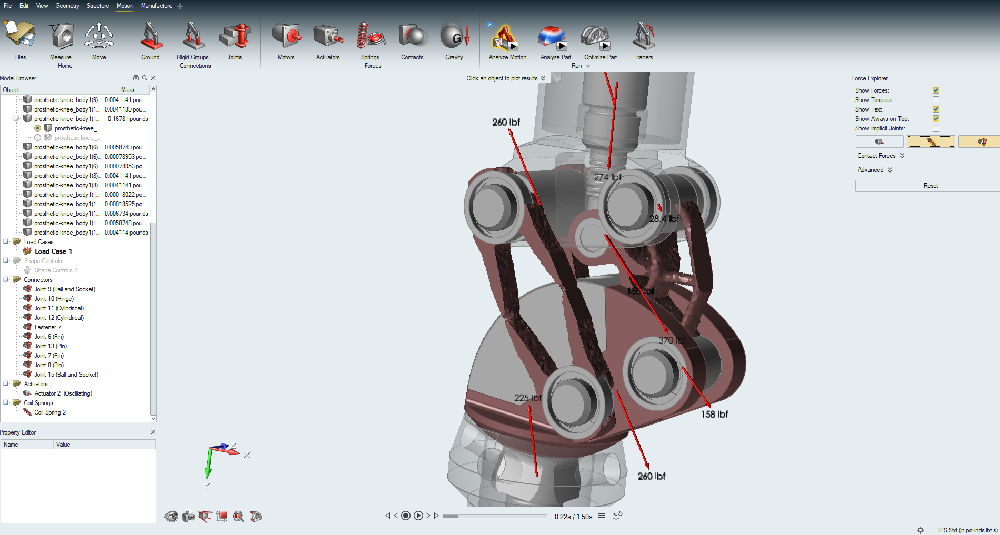
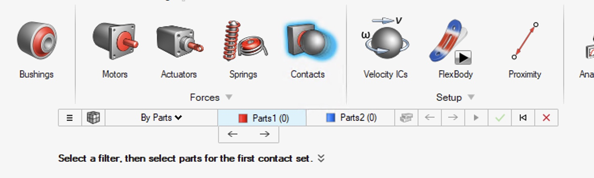
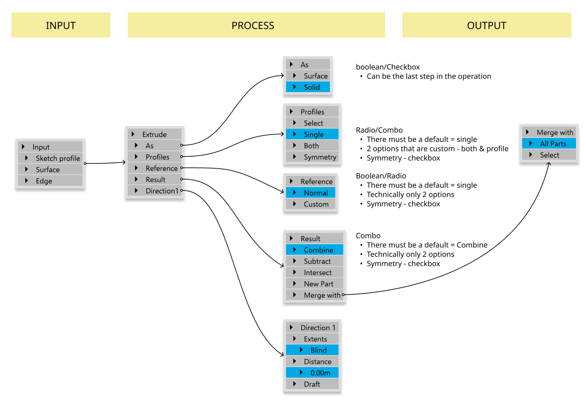
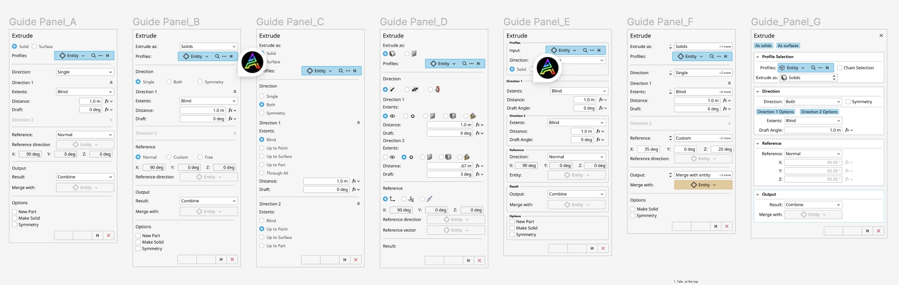
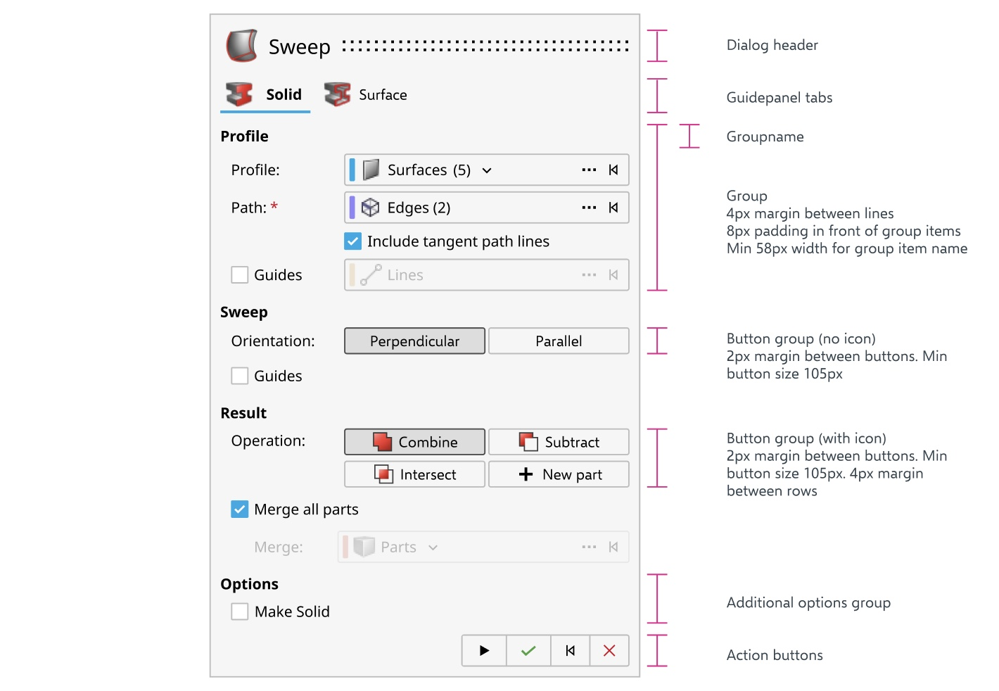

Inspire Guide Panels
A novel component to capture complex multi-step inputs in engineering software — adopted by 9 teams in six months.

Overview
Altair Inspire, launched in 2009, brought forward a completely new way to optimize engineering models. This was the first user-experience-focused topology optimization software on the market. Its goal was simple: place the power of generative design into the hands of anyone, persona-agnostic.
Previously, mechanical engineers had the formal authority to optimize designs as it required domain expertise, and optimization came after prototyping and testing. Inspire was shaking things up by bringing optimization earlier in the design pipeline.
My Contribution
I was tasked with creating a new way of capturing inputs — involving both novel component design and brand new user-experience elements that would be inherited across multiple products in our portfolio.
The Problem
As Inspire grew in complexity, we found ourselves dealing with input fatigue for several tools. Existing methods of capturing inputs were getting quite unwieldy.
The "Guide-bar" introduced with Inspire was sufficient for most tools but became increasingly hard to handle for newer tools that required multiple inputs. In some cases, the guidebar flowed across the entire width of the modeling window, forcing users to traverse this distance to complete a task.

Challenges
This new method would be inherited across multiple products in our portfolio, requiring that we:
- Understand and map typical and edge-case workflows.
- Improve the workflow while adhering to user expectations.
- Design a scalable method that is easy to comprehend, intuitive, and can be applied across workflows and products.
Discovery
I took an example of a tool called "extrude" and laid out the full flow. I used the anchoring principle to carefully choose expected defaults — informed by both my own experience as a 3D modeler and data from informal interviews with other designers.

I then performed competitor analysis and landed on a top-left to bottom-down approach versus the existing left-to-right workflow. This changed the guidebar design to a panel. I started exploring options for information architecture.

After talking with all stakeholders, we narrowed our design to a panel that satisfied these criteria:
- Clear primary workflow selection using tabs.
- Defined IA with group headers.
- Novel "entity selector" component.
- New methods for real-time editing (toggle buttons instead of dropdowns to save time).
- Mini guide bar to maintain familiarity.
- Natural progression from top-left to bottom-right.

Outcome
The new guide panel design was well received, with over 9 teams adopting the design in the first 6 months of delivery. During this redesign I also created a brand new entity selector component that made selecting multiple types of inputs in the same panel intuitive.